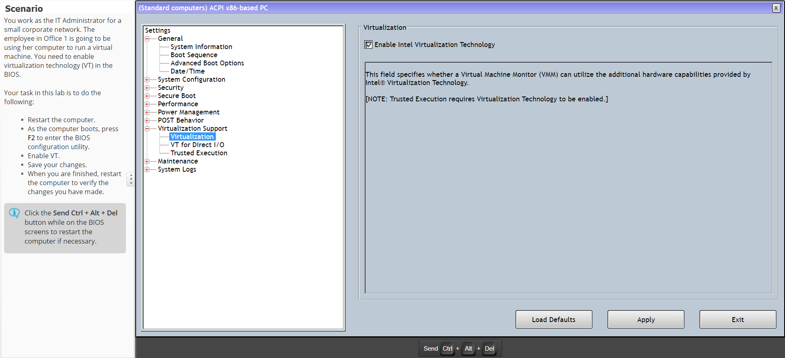
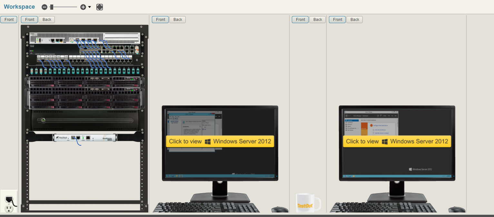

Goal 4
Understand the fundamentals of network communications and a variety of operating systems and the role they play in organizations
Concepts of Computer Hardware
Now, I've been working with computer hardware for a long time. In fact, I went into this class thinking I was exceptional at computer hardware. I was very wrong. Now when it came to working with the desktop computer hardware, I was competant, but I wasn't perfect. But when it came time to start working with servers, I knew absolutely nothing besides that you need to plug it in. Working in the virtual environment we practiced in helped give me an appreciation of individuals who work with large server farms on a daily basis. It also kickstarted my interest in networking, which I am excited to learn more about in the networking class my program also has me taking. As for what I've learned, I think I can summize it simply by saying that I know more about the different types of computer hardware that I may be using in a professional environment, and how wide the landscape can be when you begin to talk about older hardware, as well as where technology will go in the future.
Concepts of Computer Networks
This finishes up the dynamic duo of computer hardware and computer networking. Like computer hardware, this was a simulated environment that I took this class in. Now this is the class I was most excited about at Newman University. I had no prior knowledge of networking besides what an IP address was and how to troubleshoot failures. I believe the most advanced I had ever been was typing "ipconfig" into my Windows terminal to find out my IP address so I could set up a Minecraft server for my friends and I. This was the class that I wanted more then anything while at Newman.
So what did I learn? So much. So much it's hard to say. I learned about configuration of CISCO routers. I learned about network switches. I learned about subnet masks, gateways, IPV6 vs IPV4, and so much more. It even inspired me to start hosting my own server, albeit remotely through a DigitalOcean host. That inspired me to learn about the Linux subsystem, and inspired me to start learning Bash, which inspired me to start hosting my own website online. This inspired me to learn about CRON jobs in Linux, and the stories grow from there. Networking has opened up a variety of brand new opportunities for me to start growing as a developer, and I can easily say this was the most important class I took at Newman University. I don't even have to have the others to know.